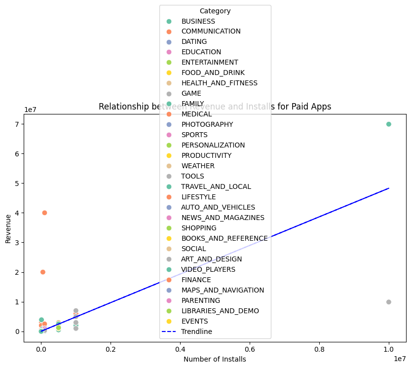
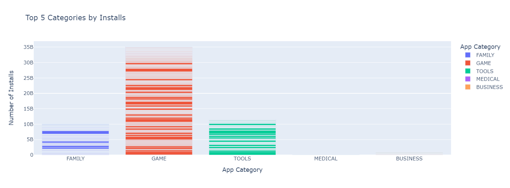
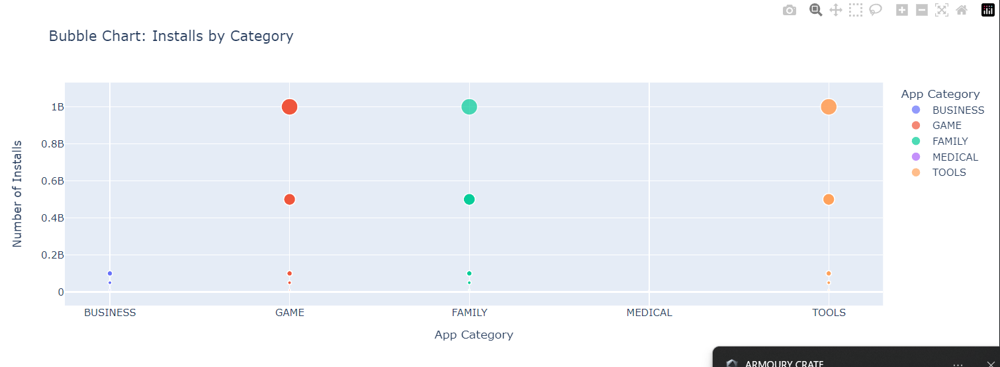
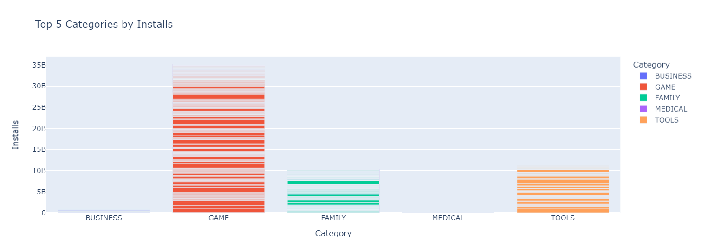

Google Play Store Analysis
Google Play Store Analysis
Top 5 Categories by Installs

This bar chart visualizes the top 5 app categories by the number of installs, showing which categories are the most popular based on user downloads. Each bar represents a category, with the height indicating total installs, offering quick insights into which categories have the highest user engagement and market reach.
Bubble Chart: Installs by Category

The bubble chart illustrates the number of installs across the top 5 categories, with bubble size representing install counts for each app within a category. This visualization brings out individual app popularity within each category, allowing us to identify top-performing apps.
Top 5 Categories by Installs (Conditional Display)

This bar chart displays the top 5 categories by installs, only outside of the hours between 12 PM and 6 PM. This feature can be useful for managing access to specific visualizations based on time, potentially helping with server load balancing and focus on specific insights.
Distribution of Ratings by App Category (Filtered)

The violin plot presents the distribution of ratings for apps with certain criteria: at least 10 reviews, a name containing the letter "C," and a rating below 4.0. It highlights the spread of ratings within each category, showing where most ratings fall and allowing for comparisons across categories.
Conclusions
- The Top 5 Categories by Installs visualization indicates that certain categories, like games and social media, dominate the market in terms of user downloads.
- The Bubble Chart allows for a more granular view, where we can see not only the number of installs but also the individual popularity of apps within each category, with larger bubbles indicating more popular apps.
- The Conditional Bar Chart serves as a reminder of the importance of time-based restrictions when dealing with data. By limiting access during certain hours, we can optimize server performance and manage user expectations effectively.
- The Violin Plot shows that certain app categories have a wider range of ratings, which might point to higher user dissatisfaction or varying experiences with the apps. It is important to monitor these trends to improve user satisfaction.
- Overall, these visualizations provide valuable insights into user behavior, app popularity, and performance metrics. They can guide decisions on app development, marketing strategies, and user experience improvements.